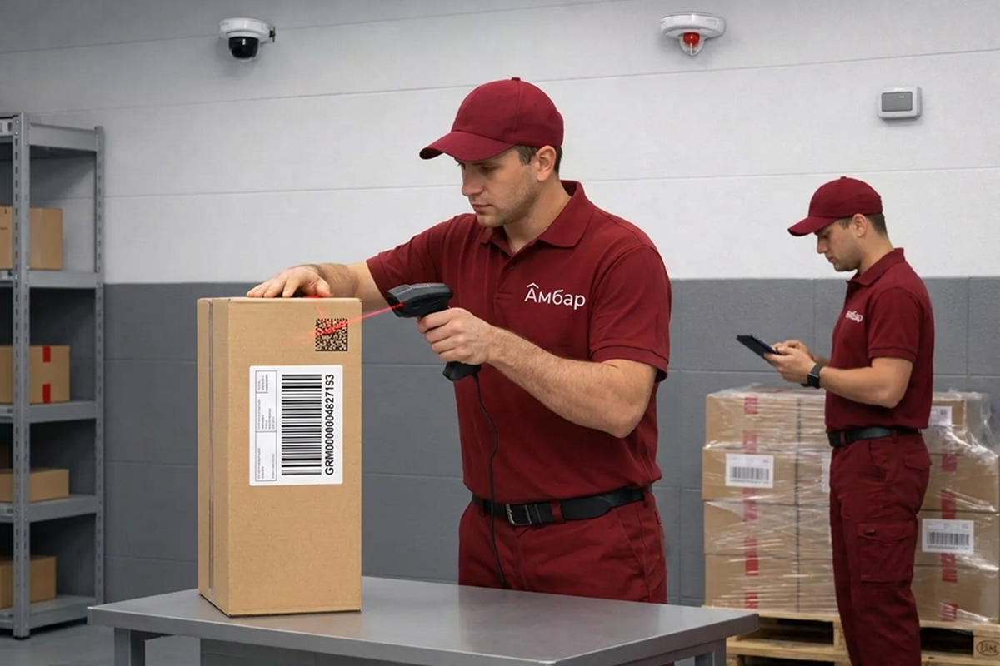
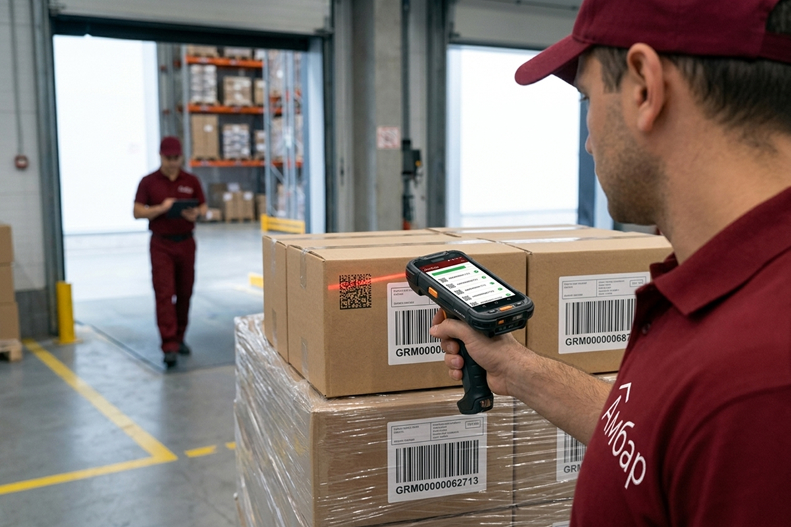
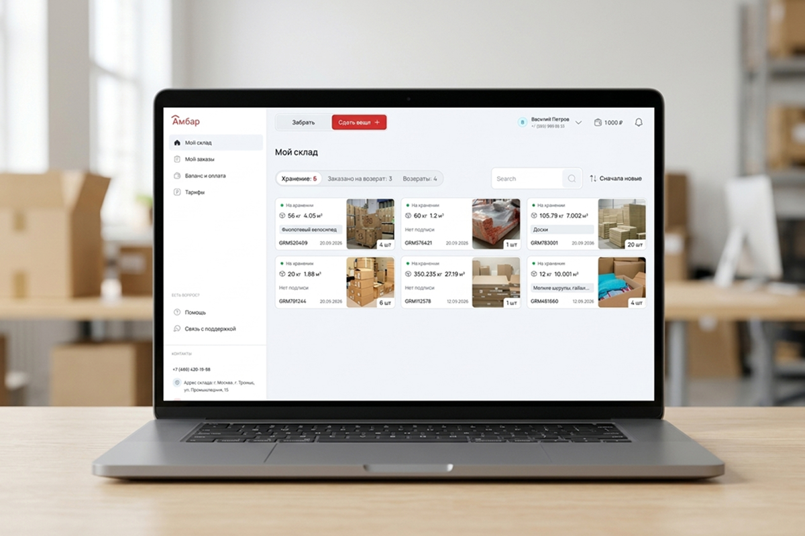

Фиксация кодов «Честный ЗНАК» при отгрузке груза

Сканируем коды Data Matrix перед выдачей груза, связываем их с заказом на отгрузку и номерами ГРМ, формируем реестр и передаем его поклажедателю
Поклажедатель — организация, индивидуальный предприниматель или физическое лицо, передающие товар на склад для хранения и складской обработки

- Контроль кодов непосредственно перед выходом груза со склада
- Сканирование терминалом сбора данных
- Привязка считанных кодов к заказу на отгрузку и ГРМ
- Реестр фактически отсканированных кодов
- Обработка без изменения базового грузового учета «АМБАР»
Услуга подключается к конкретной заявке на выдачу или отгрузку груза
Что делает склад при отгрузке маркированного груза
Поклажедатель выбирает в личном кабинете грузовые места по номерам ГРМ и создает заявку на выдачу или доставку. Сотрудник склада подготавливает выбранный груз и сканирует доступные коды Data Matrix. Система фиксирует считанные коды в составе конкретного заказа на отгрузку и связывает их с соответствующими ГРМ
После завершения обработки формируется реестр фактически отсканированных кодов. Реестр передается поклажедателю для дальнейшей работы в его учетной системе, ЭДО или личном кабинете «Честного ЗНАКа»
Сканирование кодов Data Matrix терминалом сбора данных непосредственно при подготовке товара к отгрузке является стандартной контрольной точкой складской обработки маркированной продукции

Когда требуется фиксация кодов на выходе
Нужно знать, какие экземпляры уехали со склада
Поклажедателю требуется перечень кодов Data Matrix, фактически вошедших в конкретную отгрузку
Коды находятся на товарах внутри грузового места
Перед выдачей необходимо открыть доступ к кодам, отсканировать их и снова подготовить груз к отправке
Реестр нужен бухгалтерии или оператору ЭДО
Поклажедателю требуется машиночитаемый список кодов для дальнейшего оформления документов
Нельзя допустить ручного переписывания кодов
Коды считываются ТСД и сохраняются в системе без ручного набора символьной последовательности
В одной заявке несколько ГРМ
Считанные коды необходимо связать с конкретным заказом на отгрузку и выбранными грузовыми местами
Нужно зафиксировать проблемные этикетки
При обработке могут быть выявлены отсутствующие, поврежденные, нечитаемые или повторно отсканированные коды
ГРМ учитывает грузовое место, Data Matrix — маркированную единицу
| Элемент | Что идентифицирует | Когда используется |
|---|---|---|
| ГРМ | Коробку, паллету, мешок или другое грузовое место | При приемке, хранении, поиске и выдаче груза |
| Фотография ГРМ | Внешний вид принятого грузового места | Для идентификации груза поклажедателем в личном кабинете |
| Data Matrix | Отдельную маркированную единицу товара | При дополнительном сканировании в процессе отгрузки |
| Заказ на отгрузку | Конкретную операцию выдачи или доставки | Для объединения выбранных ГРМ и считанных кодов |
| Реестр кодов | Перечень кодов, считанных в рамках заказа | Для передачи поклажедателю после обработки |
ГРМ — идентификатор грузового места.
Data Matrix — код отдельной маркированной единицы
При обычной приемке «АМБАР» не вскрывает грузовые места и не определяет содержащиеся внутри наименования или артикулы. Каждому месту присваивается ГРМ, выполняются замер и фотофиксация. Data Matrix сканируется отдельно только при заказе услуги на выходе со склада

Что входит в услугу
- Получение задания на сканирование в составе заявки на отгрузку
- Поиск выбранных грузовых мест по номерам ГРМ
- Подготовка груза и обеспечение доступа к этикеткам
- Сканирование доступных кодов Data Matrix терминалом сбора данных
- Фиксация каждого считанного кода в системе
- Связь кодов с заказом на отгрузку и выбранными ГРМ
- Контроль повторного сканирования в рамках одной операции
- Фиксация кодов, которые не удалось считать
- Формирование итогового реестра
- Передача реестра поклажедателю
- Повторная упаковка груза при наличии отдельного задания
- Передача подготовленного груза на выдачу или доставку
Как проходит сканирование при отгрузке
Шаг 1
Поклажедатель создает заявку
В личном кабинете выбираются ГРМ, которые необходимо выдать, доставить получателю или направить на другой склад
Шаг 2
К заявке добавляется услуга
В заявке указывается необходимость сканирования кодов «Честный ЗНАК», требуемый формат реестра и особые требования к обработке
Шаг 3
Склад подготавливает груз
Сотрудник склада находит выбранные ГРМ и перемещает их в зону обработки заказа
Шаг 4
Открывается доступ к кодам
Если Data Matrix находится внутри короба или под транспортной упаковкой, доступ к коду обеспечивается только по согласованному заданию поклажедателя
Шаг 5
Коды сканируются
Сотрудник считывает доступные Data Matrix терминалом сбора данных. Каждый считанный код фиксируется в составе конкретного заказа
Шаг 6
Формируется реестр
После завершения операции система формирует перечень фактически отсканированных кодов с привязкой к заказу и ГРМ
Шаг 7
Реестр передается поклажедателю
Поклажедатель получает файл и использует его для дальнейшей работы в своей учетной системе, ЭДО или ГИС МТ
Шаг 8
Груз передается на выход
После завершения обработки груз выдается представителю поклажедателя, передается перевозчику или направляется получателю
Что получает поклажедатель
Реестр считанных кодов
Файл с кодами Data Matrix, которые были фактически отсканированы при обработке заказа
Связь с заказом
В реестре указывается номер заявки или заказа на отгрузку
Связь с грузовыми местами
Коды группируются или связываются с номерами ГРМ, из которых они были считаны, если процесс обработки позволяет установить такую связь
Результат обработки
Отдельно фиксируются успешно считанные, повторные и нечитаемые коды
Данные для дальнейшего учета
Поклажедатель получает информацию для загрузки или ручной обработки в собственной учетной системе
Форматы
- XLSX

Какие ситуации фиксируются при сканировании
| Результат | Действие склада |
|---|---|
| Код считан | Код включается в реестр |
| Код повторно считан в рамках заказа | Повтор фиксируется и не добавляется как новая единица |
| Код не считывается | Информация передается ответственному сотруднику и поклажедателю |
| Этикетка отсутствует | Единица фиксируется как не имеющая доступного кода |
| Этикетка повреждена | Результат указывается в отчете по обработке |
| Код закрыт упаковкой | Требуется разрешение на вскрытие или изменение упаковки |
| Количество считанных кодов не совпадает с заданием | Отгрузка обрабатывается по согласованному сценарию |
Что важно учесть
- Услуга выполняется только при выходе груза со склада
- При обычной входной приемке коды Data Matrix не сканируются
- Склад ведет учет по грузовым местам ГРМ, а не по артикулам внутри закрытого груза
- Склад фиксирует коды, доступные для физического сканирования
- Реестр содержит результаты складского сканирования
- Реестр сам по себе не изменяет статус кодов в ГИС МТ
- Передача сведений в «Честный ЗНАК», формирование УПД, подписание УКЭП и работа через ЭДО не входят в стандартную услугу
- Ответственность за дальнейшую загрузку реестра и оформление электронных документов остается у поклажедателя, если иное не предусмотрено отдельным соглашением
Передача кодов между участниками оборота через ГИС МТ требует надлежащего электронного документа и его обработки через ЭДО; складской файл с перечнем кодов не заменяет этот процесс
Кому подходит услуга
- Компаниям, хранящим на складе закрытые короба или паллеты с маркированной продукцией
- Поклажедателям, которым не нужен поэкземплярный учет кодов на всем сроке хранения
- Поставщикам, которым требуется получить фактический перечень кодов перед передачей груза покупателю
- Интернет-магазинам и селлерам, формирующим отдельные отгрузки со склада
- Оптовым компаниям, передающим маркированный товар контрагентам
- Владельцам сезонных товарных запасов
- Компаниям, которым требуется связать список кодов с конкретной выдачей и номерами ГРМ
Что сообщить перед заказом услуги
- Номера ГРМ, включенные в отгрузку
- Предполагаемое количество кодов
- Расположение Data Matrix: снаружи или внутри упаковки
- Разрешение на вскрытие транспортной упаковки
- Требование к повторной упаковке
- Нужна ли связь каждого кода с конкретным ГРМ
- Требуемый формат реестра
- Срок подготовки заказа
- Сценарий действий при нечитаемом или отсутствующем коде
- Контактное лицо поклажедателя для согласования расхождений
Стоимость сканирования кодов при отгрузке
Стоимость рассчитывается по заданию на обработку и зависит от количества кодов, числа грузовых мест, доступности этикеток, необходимости вскрытия и повторной упаковки, формата реестра и срока выполнения
- обработка заказа на отгрузку;
- сканирование одного кода;
- вскрытие грузового места;
- повторная упаковка;
- формирование реестра;
- срочная обработка;
- дополнительные складские операции
Храните груз и заказывайте его обработку в одном месте
«АМБАР» принимает грузы компаний и предпринимателей на ответственное хранение. Каждому грузовому месту присваивается ГРМ, выполняется фотофиксация, а данные отображаются в личном кабинете. Поклажедатель дистанционно выбирает нужные ГРМ и создает заявку на выдачу, доставку или дополнительную обработку

Вопросы о сканировании кодов «Честный ЗНАК»
Сканирует ли «АМБАР» коды при приемке груза?
Нет. При обычной приемке склад учитывает грузовые места по номерам ГРМ, выполняет замер и фотофиксацию. Data Matrix сканируется только на выходе, если услуга добавлена к заявке на отгрузку
Что именно проверяет склад?
Склад проверяет возможность считать Data Matrix терминалом и фиксирует результат в составе конкретного заказа. Проверка статуса, владельца или легальности кода в ГИС МТ не входит в стандартную услугу
К чему привязываются считанные коды?
Коды привязываются к заказу на отгрузку и соответствующим номерам ГРМ. Артикул и наименование товара склад не определяет, если эти данные не были отдельно предоставлены поклажедателем
Можно ли заказать сканирование только при одной отгрузке?
Да. Услугу можно подключить к отдельной заявке на выдачу или доставку груза
Нужно ли вскрывать коробки?
Если Data Matrix находится внутри короба, потребуется согласовать вскрытие транспортной упаковки и последующую переупаковку. Если коды доступны снаружи, вскрытие не требуется
Что будет, если код не считывается?
Сотрудник фиксирует проблему и передает информацию поклажедателю. Дальнейшие действия выполняются по согласованному заданию
В каком формате передается реестр?
Базовый реестр передается в XLSX. Возможность передачи XML указывается только после технического подтверждения
Передает ли «АМБАР» реестр напрямую в ГИС МТ?
Нет. В стандартной услуге склад передает реестр поклажедателю. Загрузка сведений в учетную систему, ЭДО или ГИС МТ выполняется поклажедателем самостоятельно
Формирует ли склад УПД с кодами маркировки?
Нет. Формирование, подписание и отправка УПД не входят в стандартную услугу сканирования на выходе
Можно ли проверить, находится ли код в обороте?
Стандартная услуга не включает онлайн-проверку статуса кода в ГИС МТ. Склад фиксирует символьную последовательность, считанную с этикетки
Можно ли связать каждый код с конкретным ГРМ?
Да, если коды сканируются последовательно по отдельным грузовым местам и такое требование указано в заявке
Можно ли отсканировать код короба или паллеты вместо каждой единицы?
Это возможно только при наличии корректного агрегированного кода и заранее согласованного процесса. Стандартный сценарий предусматривает сканирование доступных Data Matrix отдельных единиц
Что нужно указать в заявке?
Укажите номера ГРМ, предполагаемое количество кодов, расположение этикеток, разрешение на вскрытие, формат реестра и порядок действий при расхождениях
Можно ли заказать повторную упаковку после сканирования?
Да, если услуга упаковки добавлена к заявке и заранее согласованы упаковочные материалы и требования к грузу
Как рассчитывается стоимость?
Стоимость зависит от количества кодов и ГРМ, доступности этикеток, необходимости вскрытия и упаковки, формата реестра и срока выполнения
Работает ли услуга без хранения груза в «АМБАР»?
Возможность разовой обработки согласовывается с менеджером. Основной сценарий услуги предназначен для грузов, находящихся на хранении в «АМБАР»
Получите реестр кодов по конкретной отгрузке
Сообщите номера ГРМ, количество грузовых мест, предполагаемое число кодов и срок выдачи. Менеджер проверит задание, рассчитает стоимость и согласует порядок обработки
Рассчитать сканирование кодов при отгрузке
Заявка отправлена. Менеджер свяжется с вами, уточнит параметры груза и согласует порядок обработки